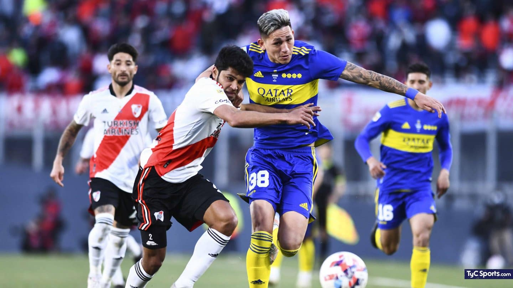

Futbol
Boca venció a River en La Bombonera con un gol de Darío Benedetto y se quedó con el Superclásico por la fecha 19 del Torneo de la Liga. En un encuentro donde el visitante dominó la posesión, fue el conjunto de Ibarra el contundente y que aprovechó las chances que tuvo para llegar con peligro al arco que defendía Armani. El único tanto del encuentro llegó a los 20 minutos del complemente desde una pelota parada. Juan Ramírez ejecutó un gran córner y el Pipa se elevó más que nadir para conectar un enorme cabezazo a la derecha del arquero Millonario. Este resultado le permite a Boca alcanzar los 32 puntos y quedar a solo dos de Atlético Tucumán, líder del campeonato. Por su parte, el Millonario se queda con 29 unidades en la séptima colocación. En la próxima fecha, los dirigidos por Ibarra visitarán a Lanús y los encabezados por Gallardo serán locales frente a Banfield.
Lista de Concentrados
- Agustín Rossi
- Luis Advincula
- Carlos Zambrano
- Marcos Rojo
- Frank Fabra
- Alan Varela
- Cristian Medina
- Pol Fernandez
- Oscar Romero
- Luca Langoni
- Dario Benedetto
- Sebastian Villa
- Javi Garcia
- Gonzalo Morales
- Pegro Milo
- Director Tecnico: Hugo Ibarra
Proximo Partido
Boca Vs Independiente
Domingo 17/10/2022 17:00hs